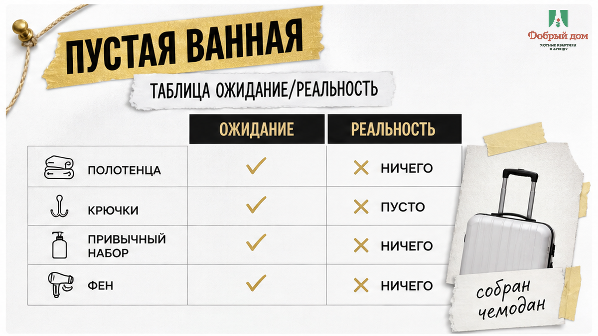
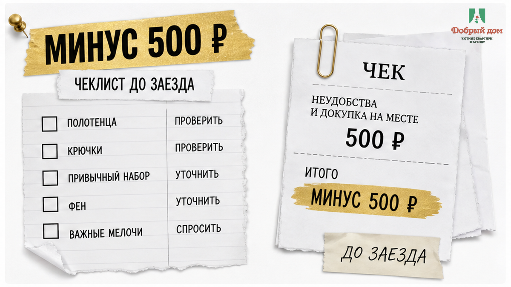
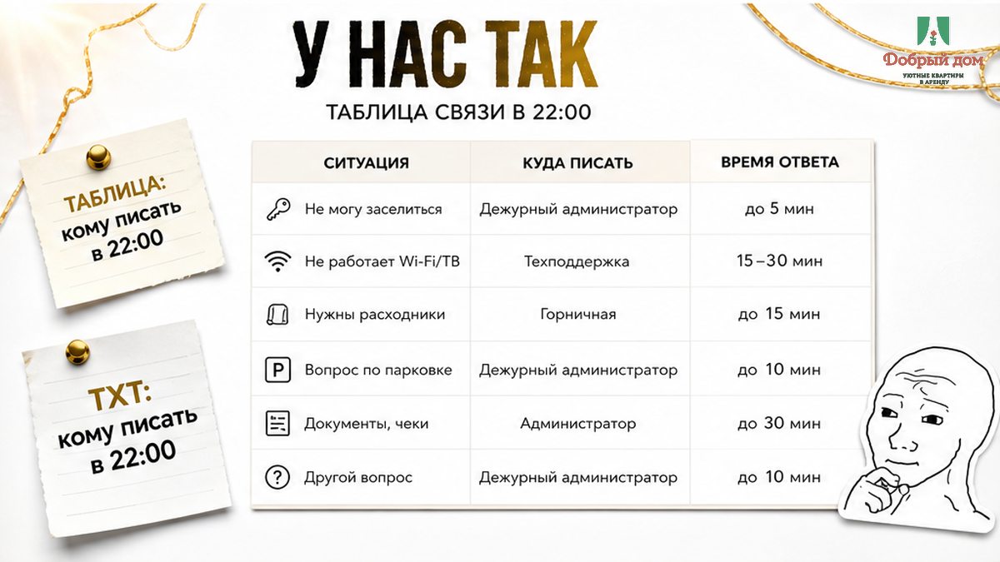

Ноябрь, пятница, 21:40. Мужчина заходит в квартиру на Пермякова с чемоданом на колёсиках, ставит его в прихожей, снимает куртку и идёт в ванную — просто умыться с дороги. Полки пустые. Крючок пустой. В барабане стиральной машины тоже ничего. Он пишет хосту: «Здравствуйте, а полотенца?» Через двенадцать минут приходит ответ: «Полотенца есть, посмотрите в шкафу в комнате». В шкафу лежит одно вафельное полотенце сорок на шестьдесят — то, которым вытирают руки. Гость снова надевает куртку, идёт в круглосуточный магазин за углом и покупает два банных полотенца. 500 ₽. Через три ночи он оставит их в квартире: везти домой чужие полотенца из посуточной — так себе трофей.
В объявлении было написано: «всё для проживания». Хост имел в виду чайник, микроволновку, утюг и постельное бельё — и был по-своему прав. Гость услышал в этих трёх словах другое: что в десять вечера ему не придётся искать магазин в чужом районе. Квартира стоила 2 900 ₽ за ночь, поездка — 8 700 ₽ за три. Плюс 500 ₽, которых не было в бюджете, и минус то самое ощущение «я приехал и сразу дома», ради которого люди вообще выбирают квартиру, а не койко-место.
Я хост посуточной в Тюмени. Это «Добрый дом». Пишу в Telegram и отвечаю в MAX. Эту историю мне рассказал гость, который через полгода снял у нас квартиру на два дня и ещё до брони спросил: «Полотенца-то у вас есть?» Я тогда посмеялся. А потом перестал, потому что он объяснил, откуда этот вопрос.

Представьте себя на его месте. Вечером накануне поездки вы собираете чемодан: зарядка, документы, рубашка, бритва. Полотенце не кладёте — оно занимает треть сумки, а вы едете в квартиру, не в поход. Потом всё-таки открываете объявление и проверяете себя: «Ну там же есть?» На экране написано: «всё для проживания». Вопрос закрыт.
Дальше — поезд, такси, код от подъезда, код от двери, лифт. Вы наконец остались в тишине, скинули обувь и пошли умыться. И упёрлись в пустой крючок. В этот момент ломается не только бытовой комфорт. Ломается обещание, которое вы прочитали в объявлении.
Гость не злится на цену 2 900 ₽. Он злится на слово «всё». Для хоста «всё» — это его собственный список вещей, который он держит в голове. Для гостя — набор предметов, с которыми можно прожить первые часы без срочного похода в магазин. Пока эти два списка нигде не записаны, они встречаются в ванной. В пятницу. В 21:40. Когда чемодан уже поставлен, куртка снята, а возвращаться на улицу совсем не хочется.
По обычному стандарту гостевого жилья на каждого человека приходится один банный комплект и одно полотенце для рук. Постельное бельё должно быть подготовлено на каждое заявленное спальное место. Не «одно на квартиру» и не «где-то в шкафу что-то лежит». Полотенце — не приятный бонус, который можно обнаружить, если повезёт. Это такая же базовая вещь, как горячая вода.
Но в объявлении часто пишут не цифры, а «всё для проживания». Обе стороны довольны формулировкой — до того самого момента, когда один человек открывает шкаф, а второй отвечает: «Посмотрите ещё в комнате».
Когда гость пересказывал мне переписку, я поймал себя на том, что защищаю хоста. «Полотенца есть, посмотрите в шкафу» — человек ведь не выдумывал. Он действительно положил туда полотенце. Одно. Вафельное. Для рук. В его внутреннем списке напротив пункта «полотенца» стояла галочка.
Вот что здесь ломается: не полотенце, а фраза «у меня всё есть». Хост смотрит на квартиру как на набор предметов, которые когда-то купил и разложил. Гость смотрит на неё как на временный дом и мысленно сравнивает с тем, как устроено у него. Один видит наличие. Второй — возможность нормально принять душ после дороги.
Я тоже когда-то мог сказать: «Да, полотенца есть», если в квартире действительно находилось хотя бы одно. Пока однажды на объекте не оказалось двух гостей и одного банного полотенца. Вторая пара полотенец утром уехала в стирку, и в моей голове всё сходилось. У гостей — нет. Они не должны были угадывать, какое из полотенец предназначено кому и когда оно высохнет.
Как вы считаете: полотенца в посуточной квартире — обязанность хоста или каприз гостя, который мог бы привезти своё? Напишите, где для вас проходит эта граница. В Telegram можно обсудить конкретный случай — там отвечаю лично.

Самый простой расчёт выглядит так: два банных полотенца в круглосуточном магазине обойдутся примерно в 300–500 ₽. После десяти вечера выбор хуже: остаётся то, что не разобрали, либо приходится брать более дорогой набор. Вслед за полотенцами может выясниться, что нет шампуня, мыла или запасной туалетной бумаги. Тогда поход за одной вещью превращается в прогулку с пакетом.
Но 500 ₽ — не главная потеря. Главная — вечер, который должен был закончиться душем и сном, а закончился поиском магазина. И следующие три ночи, когда одно полотенце приходится сушить, складывать, снова использовать для головы и рук. Человек платил за квартиру, чтобы было по-домашнему, а получил общежитие с чайником.
Есть и странная финансовая деталь. Купленные полотенца остаются в квартире. Везти их домой не хочется, выбрасывать жалко, поэтому они становятся частью комплекта для следующего гостя. Следующий человек найдёт их в шкафу и, возможно, решит, что хост хорошо подготовил квартиру. А первый заплатил за это дополнительно и ещё потратил свой вечер.
Сначала проверяйте вещи, без которых нельзя нормально прожить первые часы, — потом цену, скидку и условия оплаты. Полотенца, постель, горячая вода, рабочий замок в ванной — это не те пункты, которые удобно «решить утром». Если их нет, вечер уже испорчен. Размер скидки утром его не вернёт.
Цена, залог, способ передачи ключей и прочие деньги тоже важны. Но сначала нужно понять, можно ли войти, принять душ и лечь спать без срочного шопинга. Гости часто сравнивают десять объявлений по стоимости, выбирают вариант на 200 ₽ дешевле, а потом теряют 500 ₽ и спокойствие. Один точный вопрос до брони закрывает эту дыру — как и вопрос про скрытые доплаты, когда «всё включено» рассыпается на месте.
Спросите не «есть ли полотенца», а: «Сколько комплектов полотенец и постельного белья будет на двоих?»
На вопрос «есть ли полотенца?» легко ответить «да» и остаться формально честным. Точное количество уже не оставляет места для иллюзии: два банных и два для рук, бельё на все заявленные спальные места. Если в ответ снова приходит «конечно, всё есть», это не цифра, а предупреждение.
Тот же принцип работает с расходниками и помощью при заезде. Важно не только наличие, но и то, что будет происходить в 22:00, если нужной вещи всё-таки не окажется. Кому писать? Кто ответит? Как быстро привезут? Живой ответ на эти вопросы ценнее длинной фотогалереи.
Если сомневаетесь — присылайте ссылку на объявление в Telegram, подскажем, на что смотреть.
Это не инструкция по поиску идеальной квартиры. Это способ заранее убрать одну маленькую неопределённость, которая почему-то чаще всего проявляется именно тогда, когда человек уже стоит в ванной.

В «Добром доме» комплект считаем по количеству гостей в брони, а не просто по числу кроватей. На двоих — два банных полотенца и два для рук. Бельё подготовлено на все спальные места до приезда. При заезде от четырёх ночей комплект меняем, и это входит в стоимость. Стартовый набор расходников лежит на месте, а не прячется в неизвестной тумбочке. Вопросы по конкретной квартире — в MAX или менеджеру.
Заселение у нас бесконтактное, по кодам: коды приходят заранее, встречать никого не нужно. Подробно о том, как работает бесконтактное заселение в Тюмени, я уже рассказывал отдельно. Но у такого формата есть обратная сторона: если в квартире чего-то не хватает, гость обнаруживает это один, без человека рядом, который сразу откроет нужный шкаф.
Поэтому вместе с кодами мы отправляем короткое сообщение о квартире: что где лежит, где полотенца и куда смотреть, если понадобится запасное бельё. Это занимает несколько минут до заезда и экономит гораздо больше времени после него.
Похожая история бывает с залогом. Стороны уверены, что договорились, но каждая помнит разговор немного по-своему. На выезде это превращается в спор о деньгах. залог не вернули — скол на плите тоже стоит прочитать до перевода предоплаты незнакомому человеку.
Гость из начала истории теперь спрашивает про полотенца первым делом — в любом городе и у любого хоста. Говорит, что вопрос занимает десять секунд и уже однажды сэкономил ему испорченный вечер в Екатеринбурге. По-моему, честная сделка.
Спросите нас о комплекте до брони — ответим цифрами, а не словом «всё». Написать можно в Telegram или MAX. По конкретным датам и квартирам удобнее связаться с менеджером. Телефон для тех, кому проще голосом: +7 993 574-83-22. Свободные даты и бронь — на сайте добрыйдом-72.рф.